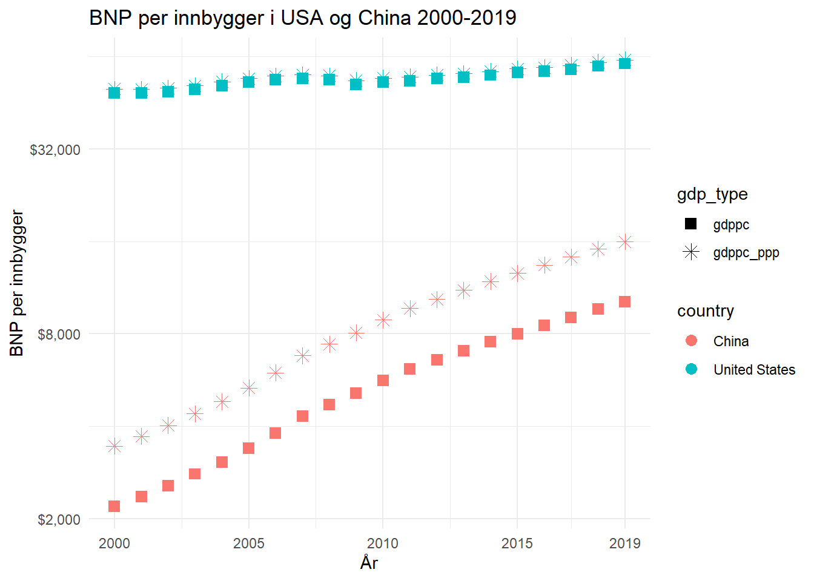

Seminar_1
You can add options to executable code like this
Oppgave 1:
Bruk variabelen “NY.GDP.PCAP.KD”(BNP per innbygger målt i konstante 2015 USD) fra pakken “WDI” (World Development Indicators, fra Verdensbanken). Tegn en graf over vekstraten i BNP per innbygger i USA og China i tidsperioden 2000-2019.
WDIsearch(string = "NY.GDP.PCAP.KD", field = "name", short = TRUE, cache = NULL)[1] indicator name
<0 rows> (or 0-length row.names)df_gdp<-WDI(
country = c("CN", "US"),
indicator = c('gdppc'="NY.GDP.PCAP.KD"),
start = 2000,
end = 2019,
extra = FALSE,
latest = NULL,
language = "en"
)# Vekst i BNP per innbygger
df_growth = df_gdp %>%
arrange(iso3c, year) %>% # Sorter pC% C%r og land
ddply("iso3c",transform,
gdpgrowth=c(NA,diff(log(gdppc)))*100) %>% # Crlig vekstrate i gdppc
mutate(gdpgrowth = as.numeric(gdpgrowth, na.rm = TRUE)) Lage plott på vekstraten i BNP per innbygger i China og USA i perioden 2000-2019
plot_growth <- ggplot(df_growth, aes(x = year , y = gdpgrowth, na.rm = TRUE)) +
xlab("År") +
ylab("BNP per innbygger (PPP)") +
ggtitle("Vekstrate i China og USA 2000-2019") +
geom_line(aes(color = country), lwd=2) +
scale_x_continuous(breaks=c(2000, 2005, 2010, 2015, 2019)) +
theme_minimal()
plot_growth
Oppgave 2: a Tegn en graf over nivå på BNP per innbygger i China og USA i tidsperioden 2000-2019. Bruk variablene NY.GDP.PCAP.KD og NY.GDP.PCAP.PP.KD (PPP 2017).
# henter variablene
df_gdp_1<-WDI(
country = c("CN", "US"),
indicator = c('gdppc'="NY.GDP.PCAP.KD", 'gdppc_ppp'="NY.GDP.PCAP.PP.KD"),
start = 2000,
end = 2019,
extra = FALSE,
latest = NULL,
language = "en"
)
# vi ønsker å ha med både BNP per innbygger i konstante USD og PPP-justert BNP per innbygger. For å ha med begge i vår graf, må vi transformere data.
data_long <- gather(df_gdp_1, gdp_type, gdp, gdppc:gdppc_ppp, factor_key=TRUE)
#View (data_long)
data_long <- data_long %>%
arrange(country, year)# Graf over BNP per innbygger i USA og China
plot_gdp <- ggplot(data_long, aes(x = year , y = gdp, group=gdp_type)) +
xlab("År") +
ylab("BNP per innbygger") +
ggtitle("BNP per innbygger i USA og China 2000-2019") +
geom_point(aes(shape=gdp_type, color = country), size=3) +
scale_y_continuous(trans = 'log2', labels = dollar, breaks=c(500, 2000, 8000, 32000, 120000)) +
scale_x_continuous(breaks=c(2000, 2005, 2010, 2015, 2019)) +
scale_shape_manual(values = c(15, 8)) +
theme_minimal()
#Display the plot
plot_gdp
Oppgave 3:
Beregn gjennomsnittligårlig vekst i BNP per innbygger for perioden 2000-2019 for USA og China. Behold siste året (2019) for China og USA
# Gjennomsnittlig årlig vekst i BNP per innbygger
df_growth_1 = df_growth %>%
arrange(iso3c, year) %>% # Sorter på år og land
group_by(iso3c) %>%
ddply("iso3c",transform,
avg_gdpgrowth=mean(gdpgrowth, na.rm = TRUE))
df_growth2019 = df_growth_1 %>%
arrange(iso3c, year) %>%
group_by(iso3c) %>%
slice(n()) %>% # Behold den SISTE observasjonen for hvert land (2019)
ungroup()Oppgave 3a:
Hvor lang tid vil det ta for China å dubblere BNP per innbygger, gitt at økonomien vokser med samme rate framover?
# Beregne dobbleringstid for China
df_double = df_growth2019 %>%
ddply("iso3c",transform,
double=c(NA,(log(2)/(avg_gdpgrowth/100))))
head(df_double) country iso2c iso3c year gdppc gdpgrowth avg_gdpgrowth double
1 China CN CHN 2019 10155.49 5.425442 8.064932 NA
2 China CN CHN 2019 10155.49 5.425442 8.064932 8.594581
3 United States US USA 2019 60698.01 1.813131 1.154142 NA
4 United States US USA 2019 60698.01 1.813131 1.154142 60.057365Oppgave 3b:
Når vil China gå forbi USA i BNP per innbygger, gitt at økonomien vokser med samme gjennomsnittlige vokstrate som de har gjort i de siste 20 årene?
t <- (log(60698.01)-log(10155.49))/((8.064932/100)-(1.154142/100))
t [1] 25.87109Oppgave 4:
Tegn Lorenz kurver for USA og China i 1985 og 2015. Du finner data med inntektsfordeling her. Du finner kode til oppgaven på denne hjemmesiden.
Tolk Lorenz-kurvene, hva har skjedd med ulikheten i China og USA mellom 1985 ogo 2015?
setwd("C:/Users/OddVi/OneDrive/Dokumenter/Studier/SOK-2011/Oppgaver")
library(readr)
df_income <- read_csv("https://raw.githubusercontent.com/uit-sok-2011-v23/uit-sok-2011-v23.github.io/main/assets/income.csv", skip = 2)Rows: 4902 Columns: 14
-- Column specification --------------------------------------------------------
Delimiter: ","
chr (1): Country
dbl (13): Year, Decile 1 Income, Decile 2 Income, Decile 3 Income, Decile 4 ...
i Use `spec()` to retrieve the full column specification for this data.
i Specify the column types or set `show_col_types = FALSE` to quiet this message.View(df_income)
# Velg data for China og USA i C%rene 1980 og 2014
sel_Year <- c(1985, 2015)
sel_Country <- c("United States", "China")
temp <- subset(
df_income,
(df_income$Country %in% sel_Country) &
(df_income$Year %in% sel_Year))
temp# A tibble: 4 x 14
Country Year Decil~1 Decil~2 Decil~3 Decil~4 Decil~5 Decil~6 Decil~7 Decil~8
<chr> <dbl> <dbl> <dbl> <dbl> <dbl> <dbl> <dbl> <dbl> <dbl>
1 China 1985 125 161 198 238 282 332 394 478
2 China 2015 474 981 1525 2126 2816 3647 4719 6258
3 United ~ 1985 3159 5731 7957 10044 12142 14405 17056 20535
4 United ~ 2015 3833 6629 9201 11719 14337 17240 20726 25425
# ... with 4 more variables: `Decile 9 Income` <dbl>, `Decile 10 Income` <dbl>,
# `Mean Income` <dbl>, Population <dbl>, and abbreviated variable names
# 1: `Decile 1 Income`, 2: `Decile 2 Income`, 3: `Decile 3 Income`,
# 4: `Decile 4 Income`, 5: `Decile 5 Income`, 6: `Decile 6 Income`,
# 7: `Decile 7 Income`, 8: `Decile 8 Income`print("Total incomes are:") [1] "Total incomes are:"total_income <- temp[, "Mean Income"] *
temp[, "Population"]
total_income Mean Income
1 3.909720e+11
2 7.022970e+12
3 3.797598e+12
4 6.557208e+12# Pick the deciles (Columns 3 to 12) in Row 1 (China, 1985)
decs_c85 <- unlist(temp[1, 3:12])
# The unlist function transforms temp[1, 3:12] from a
# tibble to simple vector with data which simplifies the
# calculations.
# Give the total income, assuming a population of 10
total_inc <- 10 * unlist(temp[1, "Mean Income"])
cum_inc_share_c85 = cumsum(decs_c85) / total_inc
cum_inc_share_c85 Decile 1 Income Decile 2 Income Decile 3 Income Decile 4 Income
0.03360215 0.07688172 0.13010753 0.19408602
Decile 5 Income Decile 6 Income Decile 7 Income Decile 8 Income
0.26989247 0.35913978 0.46505376 0.59354839
Decile 9 Income Decile 10 Income
0.75725806 1.00107527 # For China, 2015
# Go to Row 2 (China, 2015)
decs_c15 <- unlist(temp[2, 3:12])
# Give the total income, assuming a population of 10
total_inc <- 10 * unlist(temp[2, "Mean Income"])
cum_inc_share_c15 = cumsum(decs_c15) / total_inc
# For the US, 1985
# Select Row 3 (USA, 1985)
decs_us85 <- unlist(temp[3, 3:12])
# Give the total income, assuming a population of 10
total_inc <- 10 * unlist(temp[3, "Mean Income"])
cum_inc_share_us85 = cumsum(decs_us85) / total_inc
# For the US, 2015
# Select Row 4 (USA, 2015)
decs_us15 <- unlist(temp[4, 3:12])
# Give the total income, assuming a population of 10
total_inc <- 10 * unlist(temp[4, "Mean Income"])
cum_inc_share_us15 = cumsum(decs_us15) / total_inc Lorenz kurver
plot(cum_inc_share_c85, type = "l", col = "blue",
lwd = 2, ylab = "Cumulative income share")
# Add the perfect equality line
abline(a = 0, b = 0.1, col = "black", lwd = 2)
title("Lorenz curve, China, 1985")
plot(cum_inc_share_c85, type = "l", col = "blue",
lty = 2, lwd = 2, xlab = "Deciles",
ylab = "Cumulative income share")
# Add the perfect equality line
abline(a = 0, b = 0.1, col = "black", lwd = 2)
# lty = 1 = dashed line
lines(cum_inc_share_c15, col = "green", lty = 1, lwd = 2)
# lty = 2 = solid line
lines(cum_inc_share_us85, col = "red", lty = 2, lwd = 2)
lines(cum_inc_share_us15, col = "orange",
lty = 1, lwd = 2)
title("Lorenz curves, China and the US (1985 and 2015)")
legend("topleft", lty = 2:1, lwd = 2, cex = 1.2, legend =
c("China, 1985", "China, 2015",
"US, 1985", "US, 2015"),
col = c("blue", "green", "red", "orange"))
GINI-koeffisienter
g_c85 <- Gini(decs_c85)
g_c15 <- Gini(decs_c15)
g_us85 <- Gini(decs_us85)
g_us15 <- Gini(decs_us15)paste("Gini coefficients")[1] "Gini coefficients"paste("China - 1985: ", round(g_c85, 2),
", 2015: ", round(g_c15, 2))[1] "China - 1985: 0.32 , 2015: 0.51"paste("United States - 1985: ", round(g_us85, 2),
", 2015: ", round(g_us15, 2))[1] "United States - 1985: 0.37 , 2015: 0.4"Setter inn Gini i plottet:
plot(cum_inc_share_c85, type = "l", col = "blue", lty = 2,
lwd = 2, xlab = "Deciles",
ylab = "Cumulative income share")
# Add the perfect equality line
abline(a = 0, b = 0.1, col = "black", lwd = 2)
# lty = 1 = dashed line
lines(cum_inc_share_c15, col = "green", lty = 1, lwd = 2)
# lty = 2 = solid line
lines(cum_inc_share_us85, col = "red", lty = 2, lwd = 2)
lines(cum_inc_share_us15, col = "orange", lty = 1, lwd = 2)
title("Lorenz curves, China and the US (1985 and 2015)")
legend("topleft", lty = 2:1, lwd = 2, cex = 1.2, legend =
c("China, 1985", "China, 2015",
"US, 1985", "US, 2015"),
col = c("blue", "green", "red", "orange"))
text(8.5, 0.78, round(g_c85, digits = 3))
text(9.4, 0.6, round(g_c15, digits = 3))
text(5.7, 0.38, round(g_us85, digits = 3))
text(6.4, 0.3, round(g_us15, digits = 3))
Oppgave 5
Gå ut fra at en økonomis totale produksjon (BNP) kan beskrives ved bruk av produksjonsfunksjonen:
\(Y(t) = A(t)*K(t)^\alpha*L(t)^\beta*R(t)^\gamma\)
der \(\alpha = 0.4,\beta = 0.5\) og \(\gamma = 0.1\).
Oppgave 5a:
Med hvor mange prosent endres \(Y\) dersom \(K\) øker med 1\(\%\), ceteris paribus? Dette kan vi lese direkte av eksponentene. Hvis \(K\) øker med 1\(\%\), vil \(Y\) øke med 0.4\(\%\).
Oppgave 5b:
Hvor mange prosent endres \(Y\) med hvis alle produksjonsfaktorene (\(K,L,R\)) endres med 10\(\%\)? Vi kan også lese dette direkte ut av produktfunksjonen. Når summen av ekspnentene er 1, har vi konstant skalautbytte. Dette betyr at når alle produksjonsfaktorene (\(K,L,R\)) endres med 10\(\%\), vil \(Y\) endres med 10\(\%\).